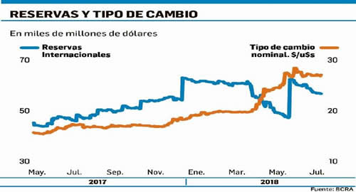

Real Chubut - Agencia de Noticias


Dólar: cerca del promedio histórico ¿es suficiente?

Tras el cierre del viernes el dólar abre hoy en torno a los $30. Y al igual que se planteaba más de un mes antes de la salida de Sturzenegger del BCRA, con relación a si el dólar de $20 -con el que el Central se sentía cómodo- era sostenible, semanas atrás resurgió el interrogante sobre el de $28.
Cabe recordar que luego del somnífero del "$20", que duró entre febrero y fin de abril, el dólar saltó a $24 y una vez batida la muralla de los "u$s5.000 millones a $25" y de ahí se dirigió a $28 sin escalas con el acompañamiento del rescate del FMI. Ahora, desde comienzos de mes resurgieron las dudas sobre la sostenibilidad del "$28" y desde la sección "Lo que se dice en las mesas" se advirtió que a la hora de hacer cuentas en el mercado contemplaba un dólar de "$30 y pico". Y el "pico" respondía a la espera del dato de la inflación de julio el próximo miércoles.
Lo que estaba en debate semanas atrás, luego de la corrección que registró el dólar al coquetear con el "$29", era cuán sostenible era este nivel. Porque el tipo de cambio nominal en torno a los $28 no solo sufre la erosión de un bimestre de alta inflación sino que por delante tiene meses donde se estima que la inflación no cederá del 2% mensual. Al respecto, vale señalar que en agosto suben, por ahora, el transporte (trenes, colectivos y subtes), la electricidad, los combustibles, las prepagas y el personal doméstico. Luego se espera en septiembre transporte (trenes y colectivos), indumentaria y personal doméstico. En octubre, trenes y colectivos y el gas mientras que diciembre tendría además de los estacionales, otro ajuste del personal doméstico. Por ello, los analistas advierten que la inflación apurará el proceso del tipo de cambio de equilibrio. "No se puede pensar en una inflación baja si hay aumentos de tarifas cada mes", avisó un reconocido consultor frente a sus clientes días atrás.
De modo que para el consenso el tipo de cambio real es de $30. ¿Ahora bien, es suficiente? Los datos históricos 1870-2018 muestran que se halla cerca del promedio de largo plazo, hoy de $31,8, según la consultora OJF. Mientras que si se toma la paridad teórica de equilibrio sería de $35 (y $30 a fin de año). En los extremos, es decir, el tipo de cambio real promedio bajo un escenario de salida de capitales y otro con entrada de capitales, serían de $45,4 y $20,8 respectivamente.
Hay que tener en cuenta que, por suerte la brecha entre el tipo de cambio efectivo y el teórico de equilibrio se ha reducido, por lo tanto, tener una tasa de interés de referencia del 40% anual brinda cierto margen para seguir corriendo el tipo de cambio, aunque no sea la prioridad del BCRA. Lo cierto es que no hay tanto margen para bajar la tasa, por lo menos, en el corto plazo. Y menos tener tasas en el secundario (de Lebac) mayores que atraigan el "carry trade" y empeore el panorama. O sea, se aprecie el tipo de cambio y vuelva a retrasarse.
La historia -según MacroView- enseña que, cuando el dólar se ubica entre $20/$25 de hoy, se necesita ingreso de capitales extraordinarios (privatizaciones, deuda), controles de cambio o precios internacionales récord. Si cae por debajo de $20, el escenario se vuelve disruptivo (Rodrigazo, tablita Martínez de Hoz, convertibilidad). Mientras que si coquetea en torno a $30 (+/-10%) se torna más competitivo el comercio exterior y hay que ver cómo ajustan los flujos financieros (atesoramiento, inversiones, turismo, etc.). Un escenario de un dólar arriba de $35, es un dólar recontra alto muy difícil que se sostenga por mucho tiempo, mientras que uno por encima de $45, es un dólar de crisis. Para tener una idea Néstor Kirchner (2003-07) tuvo un promedio de $40 de hoy, Cristina Kirchner (2008-11) sin cepo de $28 y con cepo (2012-15) de $21 con el "blue" de $32.
Por lo pronto, el mercado aguarda el balance cambiario de julio para ver cómo se comportó el sector externo y ajustó con el dólar a $28. Mientras tanto, en paralelo se erigen plegarias ante el recrudecimiento de la crisis de los emergentes, y de reojo monitorean las subastas de Lebac y Letes.
Fuente: Ambito